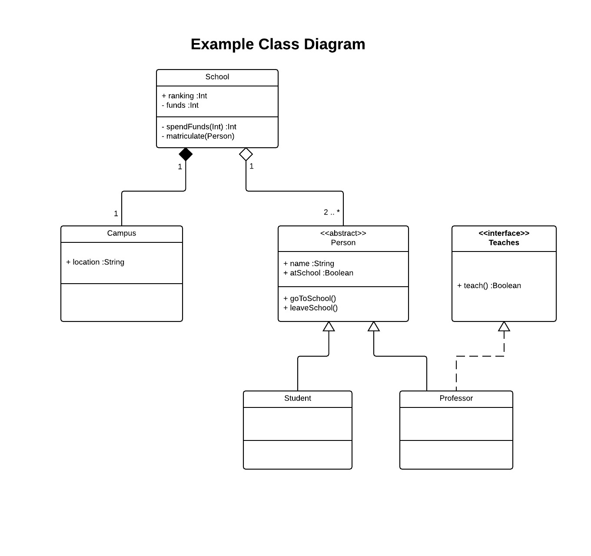
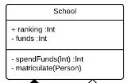
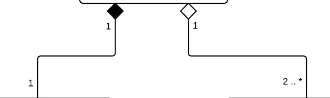
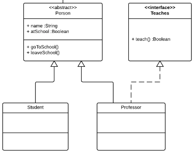

A class diagram is static because it illustrates the set structure of classes in a project. A class diagram is more specific than an activity diagram. A class diagram details the specific classes, interfaces, attributes, and other components of a project.
class School {
public int ranking;
private int funds;
private int spendFunds(int spend) {
this.funds -= spend;
return funds;
}
private final Campus campus = new Campus;
private List people;
private void matriculate(Person person) {
people.add(person);
}
}
class Campus {
public location;
}
abstract class Person {
public String name;
public boolean atSchool;
public void goToSchool() {
this.atSchool = true;
}
public void leaveSchool() {
this.atSchool = false;
}
}
class Student extends Person {}
class Professor extends Person implements Teaches {
boolean teach() {
return Math.random() > .5 ? true : false;
}
}
interface Teaches {
public boolean teach();
}

Each of the boxes in this diagram represent a class or interface. Notice the class named School. Its class name is at the top of its box. Its box is segmented into three parts. The second segment contains its attribues. In the School class, the "+" means that ranking is public and the "-" means that funds are private. Also, "#" means the attribute or operation is protected. Below the attribute segment are the operations. Notice that the input and output types are specified. The spendFunds operation accepts integers and output integers. The matriculate operation accepts Person objects and outputs void.

In our example, a school is composed of exactly one campus and a school has a aggregation of two or more people. The numbers at each end of the association line state the multiplicity of each class. This is of the form z where z means exactly that many or x .. y where x states the minimum and y states the maximum. When y is "*", it means that there can be as many as desired.
A composition is represented by a solid line and a solid diamond. Composition means a strong dependency. A campus cannot exist independent of school. When the school is destroyed, so too is the campus.
An aggregation is represented by a solid line and a hollow diamond. Aggregation is not as strong of an association as composition. People can exist independently of the school. When the school is destroyed, the people become free objects.

The stereotypes abstract and interface are enclosed in brackets at the tope of Person and Teaches respectively. The stereotype explicitly states the type of the box in the class diagram. Notice that the inheritance of the derived class Student from the base class Person is represented by a solid line with a hollow arrow. To represent that Professor interfaces Teaches, we use a dotted line with a hollow arrow.

Our final type of diagram to examine is sequence diagrams
Or return to the table of contents.